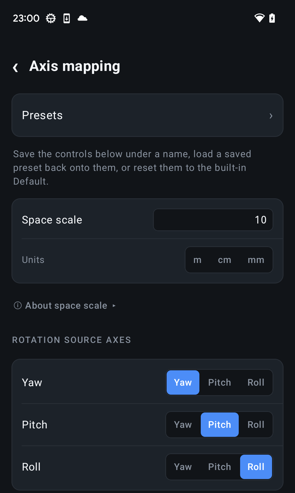

Before you begin
6DoF Camera Tracker sends standards-based OSC over UDP, but it does not currently include a ready-made MotionBuilder device plugin. Use an OSC-capable receiver you trust, or treat this page as the specification for your own integration.
A production receiver should listen on a background network thread, retain the newest complete pose, and apply it to a camera from MotionBuilder's evaluation or main thread. Do not block scene evaluation while waiting for UDP packets.
Configure the Android stream
| Setting | Recommended value | Reason |
|---|---|---|
| Protocol | OSC | Inspectable UDP messages with pose and optional side channels. |
| Target IP | MotionBuilder workstation's IPv4 address | The receiver binds locally; the phone sends to it. |
| Target port | The UDP port bound by the receiver | Choose an unused port and use it at both ends. |
| Send mode | Unicast | Avoids broadcast and multicast batching on many Wi-Fi networks. |
| Axis mapping | Default preset | Provides a known X-right, Y-forward, Z-up wire frame. |
| Space scale | 100 | Sends centimetre-sized values, matching MotionBuilder's common scene unit. |
| Stream rate | 30–60 Hz | Start at the scene rate; increase only after the path is stable. |


Receive the OSC messages
Every stream tick sends one complete pose snapshot. A receiver should ignore addresses it does not recognise and keep the newest valid packet if packets arrive late or out of order.
| Address | Contents | When sent |
|---|---|---|
/livetracker/pose | Camera ID, pan, tilt, roll, X, Y, Z, zoom, focus, iris | Every tick |
/livetracker/lens | Calibration flags and physical lens ranges | At start, on change, and periodically |
/livetracker/diag | Sequence and send time | When diagnostics are enabled |
/livetracker/imu | Raw Android sensor values | Pro, when raw IMU streaming is enabled |
The pose type tags are ,iffffffiii. Values are big-endian OSC 1.0 fields, with one message per UDP datagram and no OSC bundle.
Convert the coordinate frame
With the app's Default preset, the wire frame is right-handed: X points right, Y points forward, and Z points up. A practical starting conversion for MotionBuilder's Y-up camera space is:
Map wire position (X, Y, Z) to MotionBuilder (X, Z, -Y). With Space scale 100, the values are already centimetre-sized.
Rotation is not a plain XYZ Euler triple. Compose yaw about world up, then pitch, then roll about the camera's own axes, and convert that orientation into the MotionBuilder camera frame. Unwrap angles when interpolating across ±180 degrees.
Apply data safely
- Bind a UDP socket to the configured port and parse complete OSC datagrams on a network thread.
- Validate the address and exact type tags. Drop truncated or unexpected packets.
- Write the newest pose into a thread-safe latest-value slot rather than queueing old frames.
- Read that value during MotionBuilder evaluation and drive an
FBCameraor animation-node output. - Use calibrated zoom as focal length in millimetres. Convert calibrated focus and iris only if your scene uses them.
- Treat a short period without packets as an offline device and hold or release the camera predictably.
Verify before a production take
| Phone movement | Expected Default-preset signal |
|---|---|
| Turn right | Pan increases |
| Tilt up | Tilt should increase; confirm against your receiver |
| Roll clockwise from behind | Roll should increase; confirm against your receiver |
| Walk forward | Wire Y increases |
| Move right | Wire X increases |
| Raise the phone | Wire Z increases |
| Walk one metre at scale 100 | Position changes by approximately 100 |
Troubleshooting
- No packets: confirm the workstation IP, UDP port, Windows Firewall rule, and that the receiver is bound before streaming starts.
- Camera points sideways: verify the camera's local forward axis and apply the frame conversion once.
- Wrong scale: use Space scale 100 or multiply metre values inside the receiver, but not both.
- Jitter: retain only the newest packet and interpolate recent samples; do not replay a growing UDP queue.
- Lens values look arbitrary: read the lens calibration flags before interpreting encoder integers as physical units.